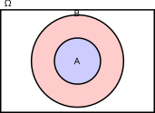

Code
\tikzset{
every node/.style={font=\sffamily\normalsize},
every path/.style={line width=1.5pt}
}
\begin{tikzpicture}
\draw (0,0) rectangle (6,4);
\node[above right] at (0,4) {$\Omega$};
\draw[fill=red!20] (3,2) circle (1.8cm);
\node[above=1.6cm] at (3,2) {$B$};
\draw[fill=blue!20] (3,2) circle (0.9cm);
\node at (3,2) {$A$};
\end{tikzpicture}